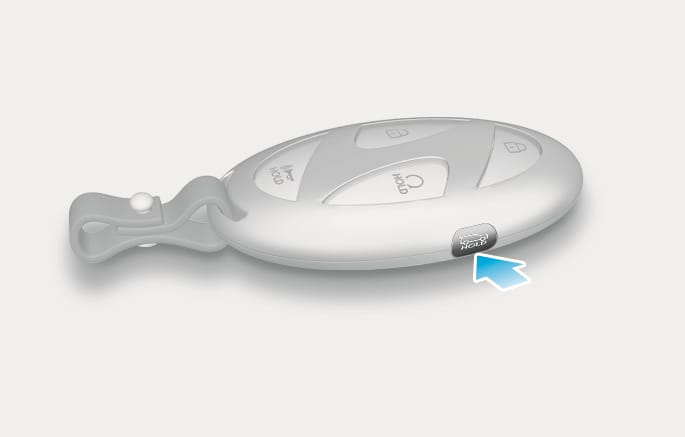
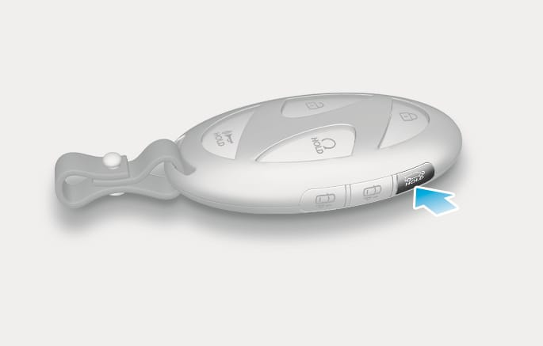
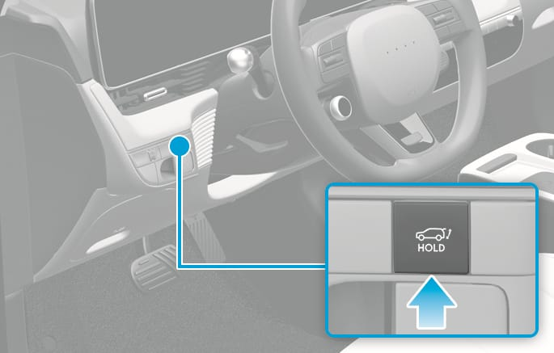
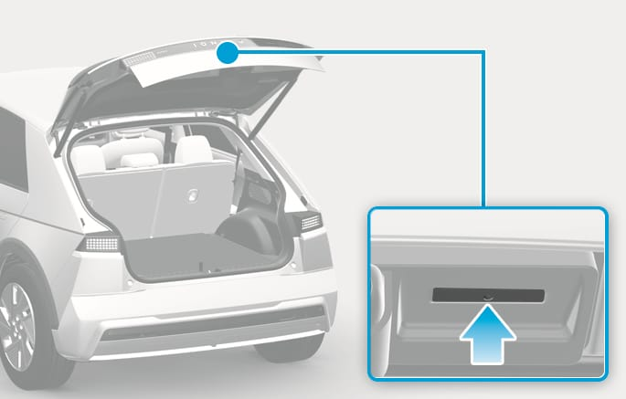
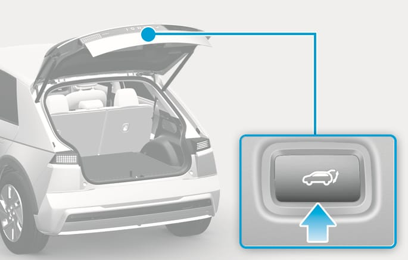

파워 테일게이트 열고 닫기

2C_SmartKeyTailgateOpenButton

2C_SmartKeyTailgateOpenButton_2

2C_CrashPadTailgateOpenButton
테일게이트가 닫힌 상태에서 스마트 키 또는 운전석의 테일게이트 버튼을 1초 이상 길게 누십시오.
-
경고음과 함께 테일게이트가 열립니다.
-
작동 중 버튼을 짧게 누르면 테일게이트를 원하는 위치에서 정지시킬 수 있습니다.
-
열려 있는 테일게이트를 닫으려면, 테일게이트가 완전히 닫힐 때까지 스마트 키 또는 운전석의 테일게이트 버튼을 길게 누르십시오.
-
테일게이트가 닫히는 중 테일게이트 버튼에서 손을 떼면 작동이 멈추고 약 5초 동안 경고음이 울립니다.
-
스마트 키의 테일게이트 버튼을 누르고 있는 동안 차량과 스마트 키 사이 거리가 약 10 m 이상으로 멀어지는 경우, 작동이 멈추고 약 5초 동안 경고음이 울립니다.
스마트 키 또는 실내의 파워 테일게이트 열림/닫힘 버튼을 사용하기 전에 테일게이트 주변에 사람이나 물체가 없는지 확인하십시오. 테일게이트 주변에 사람 또는 물체가 있으면 부상을 입거나 손상될 수 있습니다.

2C_OutsideTailgateOpenButton
테일게이트가 닫힌 상태에서 번호판 상단의 버튼을 누르면 경고음과 함께 테일게이트가 열립니다.
-
차량이 잠긴 상태에서 테일게이트를 열려면 스마트 키를 휴대하고 버튼을 누르십시오.
-
테일게이트가 잠겨 있지 않은 경우, 스마트 키를 휴대하지 않아도 버튼을 눌러 테일게이트를 열거나 닫을 수 있습니다.

2C_PowerTailgateTrimTailgateOpenButton
파워 테일게이트 버튼을 누르면 경고음과 함께 테일게이트가 열리거나 닫힙니다.